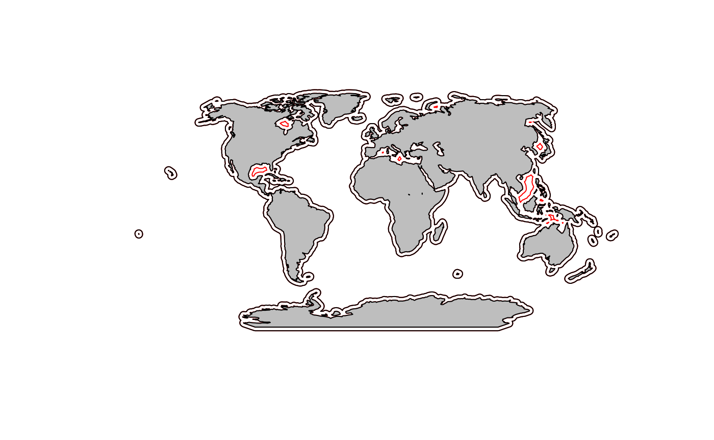
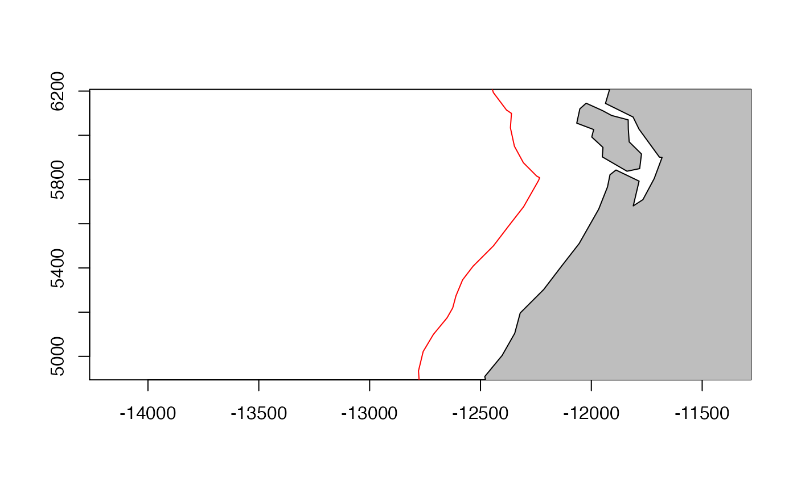
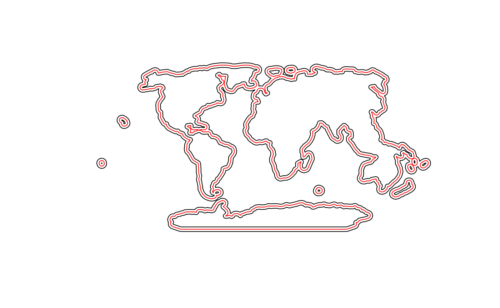
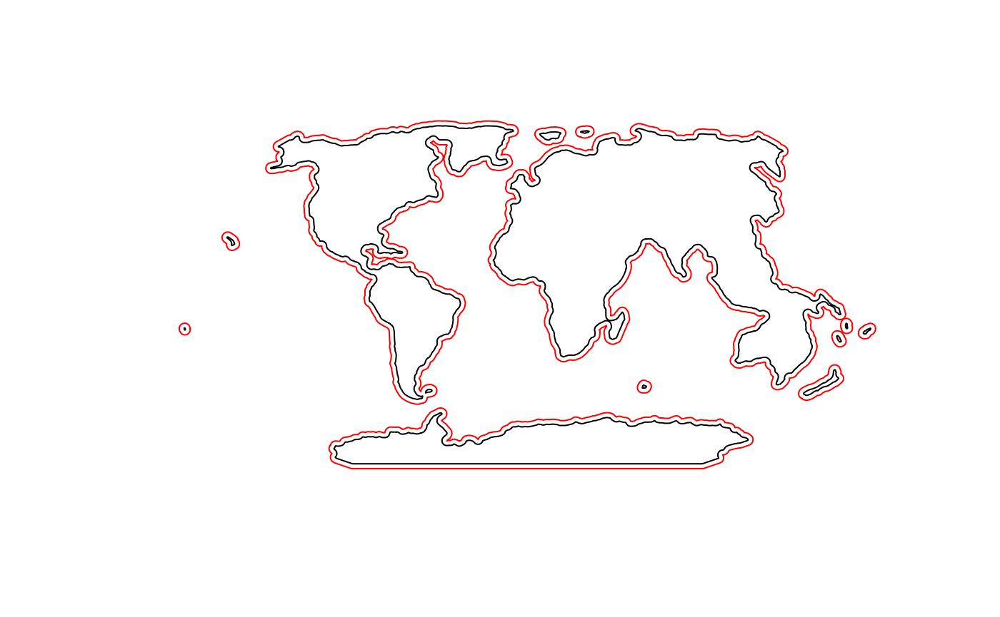

vignettes/5_add_line_parallel_to_coast.Rmd
5_add_line_parallel_to_coast.RmdThis example shows how to make a line that is parallel to the coast and how to make a line that follows the coast but removes any inlets (like Puget Sound or San Francisco Bay).
Load the sample data.
data("sample_raster", package="basics")
df <- sample_raster$df
ras <- sample_raster$raster
lons <- sample_raster$lons
lats <- sample_raster$latsLoad the needed packages for plotting.
## Loading required package: raster## Loading required package: sp## Loading required package: ggplot2For this buffer, I am using a fairly zoomed out version of the coastline. You could use the coastline from rnaturalearth.
This is a projection in meters (not longlat). Note that I have set the units to km. See comments in the add_coast_buffer vignette about why rgeos::gBuffer() must be used and not raster::buffer().
# Step 1
newcrs <- "+proj=wintri +lon_0=0 +lat_1=0 +x_0=0 +y_0=0 +datum=WGS84 +units=km +no_defs"
# Step 2 World coastline in meters
data("world", package="basics")
mworld <- sp::spTransform(world, newcrs)
# Step 3
buff300 <- rgeos::gBuffer(mworld, width = 300, byid=TRUE)
# Step 4
e <-raster::erase(buff300, mworld)We want just the outer part of this polygon. We will use the remove.holes() function from spatialEco.
# Step 5
e300 <- spatialEco::remove.holes(spatialEco::remove.holes(e))## Warning in sp::proj4string(x): CRS object has comment, which is lost in output
## Warning in sp::proj4string(x): CRS object has comment, which is lost in outputNow we can plot and the holes that were removed are the red lines.

pts <- sp::SpatialPoints(cbind(lons, lats), proj4string = sp::CRS("+proj=longlat"))
mpts <- sp::spTransform(pts, newcrs)
plot(e300, border="red", axes=TRUE, xlim=mpts@bbox[1,], ylim=mpts@bbox[2,])
plot(mworld, add=TRUE, col="grey")
We could use the method above but the 20 km buffer would dip into the inlets and we don’t want that. We want this to be 280 km inside of the 300km line.
e300 into lines. Otherwise our 280 km buffer will only be outside and we want the inner one.
el300 <- as(e300, "SpatialLines")
buff20 <- rgeos::gBuffer(el300, width=280)If we plot this we see that it is on both sides of our 300 km line. We want only the inner lines.

Remove the outer part of the polygons. Let’s make it lines too.
e20 <- only.holes(buff20)## Warning in sp::proj4string(x): CRS object has comment, which is lost in output
el20 <- as(e20, "SpatialLines")Now it looks better. Potentially we’ll want to remove the smaller polygons (islands).

We can look off the WA coast.
Now we can add some locations where we will sample the coastline
spatialEco::remove.holes()
only.holes <- function (x)
{
if (!any(which(utils::installed.packages()[, 1] %in% "maptools")))
stop("please install maptools package before running this function")
xp <- slot(x, "polygons")
holes <- lapply(xp, function(x) sapply(methods::slot(x, "Polygons"),
methods::slot, "hole"))
res <- lapply(1:length(xp), function(i) methods::slot(xp[[i]],
"Polygons")[holes[[i]]])
IDs <- row.names(x)
x.fill <- sp::SpatialPolygons(lapply(1:length(res), function(i) sp::Polygons(res[[i]],
ID = IDs[i])), proj4string = sp::CRS(sp::proj4string(x)))
methods::slot(x.fill, "polygons") <- lapply(methods::slot(x.fill,
"polygons"), maptools::checkPolygonsHoles)
methods::slot(x.fill, "polygons") <- lapply(methods::slot(x.fill,
"polygons"), "comment<-", NULL)
pids <- sapply(methods::slot(x.fill, "polygons"), function(x) methods::slot(x, "ID"))
x.fill <- sp::SpatialPolygonsDataFrame(x.fill, data.frame(row.names = pids,
ID = 1:length(pids)))
return(x.fill)
}